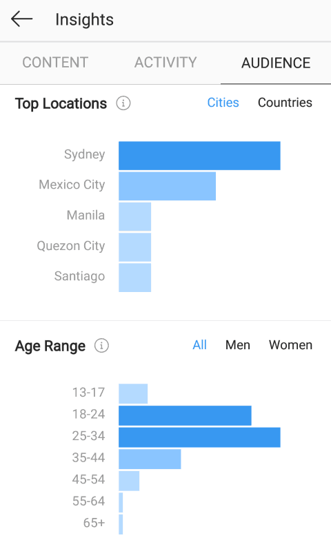
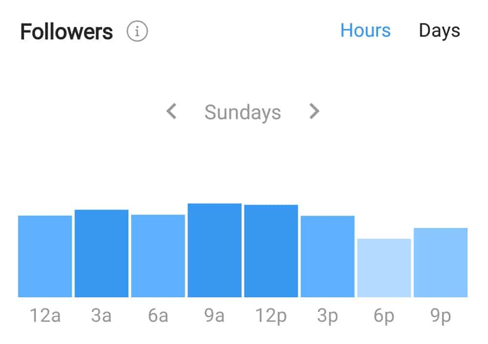
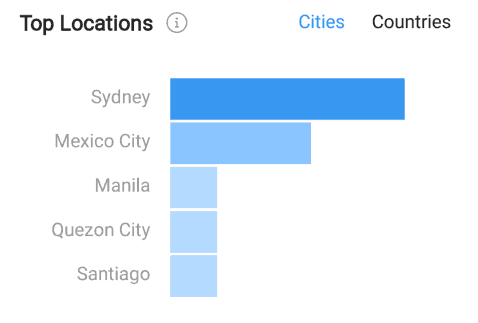
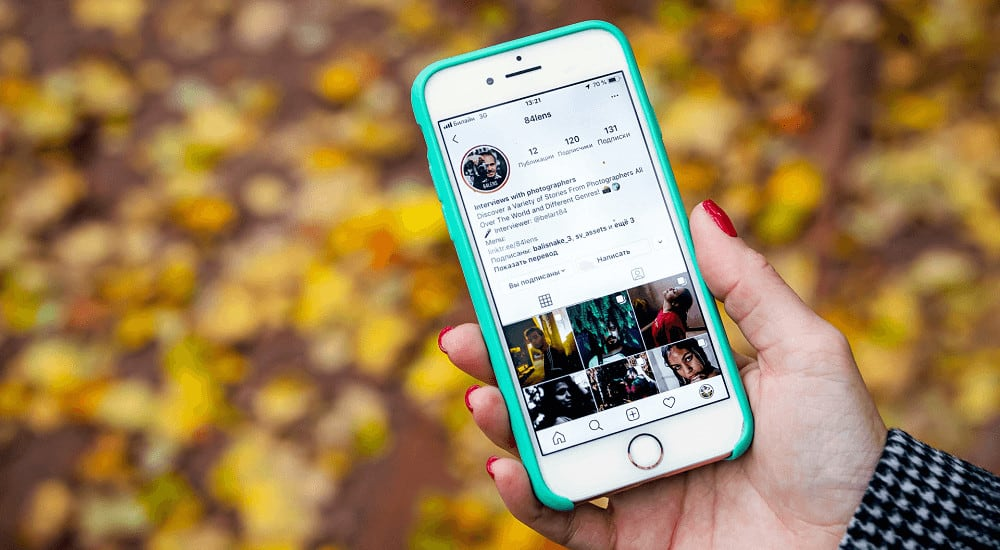

There’s always room for better engagement.
In the slew of tips regarding hashtag strategies, ad placements, and reliance on marketing services; one method remains completely free and easy to implement: knowing the best time to post on Instagram.
With enough research and insight into your current audience activity, you can quickly discover the optimum times and days of the week to upload your Instagram content. These are timeframes in which your existing (and potential!) followers are more active – the times that garner you most interaction and engagement.
So, what are the best times to post on Instagram? Using intensive studies, we break these down in the following sections – but first…
What are Your Instagram Metrics?
Instagram metrics are the standards you use to measure your profile performance. While these differ depending on your business goals and industry, we’ll take a look at three important metrics below: engagement rate, follower growth, and optimum posting times.
Engagement Rate

Your engagement rate refers to how well your audience responds to the content you post. You can track your overall engagement rate to determine the interactions on your profile over time; or monitor your engagement rates per post to see which types of content resonate with your audience best.
Follower Growth

Follower growth refers to your audience growth over time. This is an essential metric to track when building an Instagram brand; as continuous growth shows you’re doing something right. On the other hand, drop-offs in your follower count may point to poor practices in your content or marketing strategy.
Either way, keeping an eye on your follower growth (and the factors that influence it) can helps you set your profile on the right track.
Optimal Posting Times

The best times to post on Instagram are the days – and times in the day – during which your target audience is most active and engaged.
Keeping track of your optimal posting times is thus mandatory for boosting your engagement rate (and potentially, your follower growth in turn).
These times will vary depending on the niche and location of a target audience, so it’s important to do your own research. And while it doesn’t necessarily guarantee you that instant engagement; it’s a great starting point for increasing your reach.
So, how do you determine your best times to post on Instagram?
Using Instagram Insights
The most basic, accessible tool at your disposal is the native app feature, “Instagram Insights“.
This data is exclusively available to those with a business account; so if you haven’t made the switch already (especially if you’re an aspiring brand) do so now!

Your insights are accessed through your account menu under “Archive”. Tapping this button will lead you to an informative overview of your content performance, profile activity, and audience data.

To determine your best times to post on Instagram, hop on over to the “Audience” tab. This section displays all the pertinent statistics on your followers and most engaged types of users.

The data shown includes your top-engaged locations, age range, gender – and the specific days and hours your audience is most active.

Needless to say, this is what you’ll want to focus on when deciding your optimal posting times. Though the data is quite surface-level, it’s a great place to start.
Experimenting With Your Best Times
Another easy way to find your best posting times is to simply experiment.
This may involve a bit more research and patience (plus a spreadsheet or two!); though considering how optimal post times are dependent on each, exclusive user, it could be well worth the effort.
Testing your best times needn’t be a complex process – it can be as simple as having a different posting time for each day of the week (this would require a new Instagram post every day!).
The social marketing platform, Later, offers this method on their Instagram blog. Once you’ve completed one week, repeat the process for the next (and the one after that), switching the timing of your posts for each day.
Courtesy of Later.
Once you’ve experimented with each posting time for each day, compare the amount of interactions you’ve received on each day/time.
Courtesy of Later.
This will not only determine your best-performing day of the week and the optimum posting time for that day; but your most engaged times for each separate day of the week.
Best Time to Post on Instagram – General Guidelines
Though these strategies are valuable methods of finding your optimal post times, below are additional factors to consider.
When to Post on Instagram – Consider the Time Zone
As helpful of a tool as Instagram Insights is, it offers the average data on your audience across all their locations.
While valuable for brands attempting to reach a broad scope of followers, those targeting a specific, geographical region may find these statistics a tad wonky.

When deciding your optimal post times, take your target audience’s location into account. Make sure you strategize your times around their specific time zone, even if it isn’t your own.
Determining your most engaged audience times based on location can be achieved through third-party apps, as we’ll discuss below. If your Instagram Insights already reveal your target location as your most engaged source of users; the data they provide on your most engaged audience times can be a helpful (if slightly inaccurate) starting point.
When to Post on Instagram – Off-Work Hours
Analytics aside, a simple factor to consider when determining your best posting times is when your audience is likely off work or school hours.
These typically take place around the 5 to 9 pm timeframe, or the mornings just before work around 7 to 9 am. Be sure to take lunches into account too, as those on their breaks will likely be scrolling through their Instagram feeds to pass the time.
While you can look into detailed statistics for better accuracy, plenty chalk this up to common sense or educated guesses. Think about it; when are you most likely to browse through Instagram?
When to Post on Instagram – Consider the Industry
Not only will your optimum posting times differ by location – they can also vary by industry.
Research shows that specific sectors vary considerably in their best (average) Instagram post times, so be sure to take your industry’s statistics into account.

Sprout Social took time to research on the best posting times among retail, media, technology, educational, healthcare, and non-profit organizations. The results were quite diverse:
-
- (Best Posting Time for) Retail Companies: 3 pm on Wednesdays
- Media Companies: 9 am on Fridays
- Tech Companies: 6 am and 9 am on Wednesdays
- Education Companies: 10 am on Fridays
- Healthcare Companies: 8 am on Tuesdays
- Non-Profit Companies: 2 pm on Wednesdays
Of course, their reports hadn’t covered all industries. If it’s absent in the list above, it’s worth looking through available statistics on your specific niche.
When to Post on Instagram – Use Third-Party Apps
Going at this research alone can be quite daunting, especially if you’re new to the Instagram platform.
To save the extra time and effort, you can always turn to third-party apps that do all the heavy-lifting for you. These tools provide detailed statistics on your profile activity, the engagement it receives, and your target audiences – helping you tailor your content and marketing strategy as necessary. This, of course, includes data on your best times to post for Instagram.
Below, we discuss the top three tools that offer this information.
Later
Though best-known for their third-party Instagram scheduler, Later offers a wide variety of analytical tools for boosting your content engagement and follower growth.
Users can uncover their optimal posting times by using their “Best Time to Post” feature. This tool automatically calculates your top seven posting times that garner the most engagement.

Courtesy of Later.
You can additionally check when your audience is most active on the app along with your top time zones to ensure accurate location targeting.
This data can then be used hand-in-hand with Later’s Instagram scheduler – an online content calendar that directly publishes to your feed, according to a set date and time.

Courtesy of Later.
These is especially helpful for those living in a different time zone to their target audience. You may find your audience most active during hours when you’re not available; for example, Australian brands targeting American users may find their potential followers most engaged during early morning Australian hours (such as 12 or 3 am).
Through Later’s scheduler, however – users have the ease of preparing their posts for automatic publishing at their best-performing times.
Iconosquare
Iconosquare offers Instagram users detailed reports on all important performance metrics – including engagement rate, follower growth, reach, impressions, and hashtag growth rate.
The platform also offers an in-depth overview of when most of your followers are online, and the specific times your receive the highest engagement.
A perk to using Iconosquare are the visual charts they use in displaying such data – keeping information simple and easy to understand.
For example, your audience’s most active times are displayed through a color-coded graph with an hourly breakdown for each day of the week.

Courtesy of Iconosquare.
The more saturated the color, the more active your followers are during that time.
Iconosquare has a separate chart for most engaged times, and follow a similar visual concept, as seen below.

Courtesy of Iconosquare.
Your best time to post within the week is instantly marked by a symbol amongst the rest of the data.
These reports are clear representations of your audience statistics, and help you grasp important information right off the bat.
Similarly to Later, Iconosquare also provides a third-party Instagram scheduler; letting you easily schedule your posts according to the data they provide.
Courtesy of Iconosquare.
Sprout Social
Sprout Social is an all-around marketing platform for any social media channel, determined to drive you the the best results possible in your online content strategy.
Among their tools for Facebook, Twitter, Pinterest, and LinkedIn – they offer professional-grade analytics for Instagram profiles.
Courtesy of SproutSocial.
This suite offers plenty of detailed reports on your post performance, hashtags, audiences, and even competitors. They track and measure activity from your followers over time; determining optimum times of engagement. Users can use these data trends in deciding their best times to post on Instagram.
Or, they can opt for the platform’s “ViralPost” feature – both functioning as a third-party scheduler and performance analytics tool.

Courtesy Sprout Social.
ViralPost analyzes the content history of your profile, collecting data on how and when your followers engage. When scheduling new content, the feature suggests your optimal post times, measured by a rating of one to five stars.
It’s a simple tool that hits two birds with one stone – and grows your account in the process!
Best Global Times to Post on Instagram
Sprout Social has also covered the best times to post on Instagram across most brand niches. For those curious, here’s what they found:
- Best general times to post on Instagram: 11 am on Wednesdays and 10-11 am on Fridays
- The best day to post on Instagram: Wednesdays
- The worst day to post on Instagram: Sundays – they tend to garner the least engagement
Courtesy of Sprout Social.
To maintain consistent engagement throughout the week, Sprout Social recommends users to post from Tuesday through Friday, within the 10 am to 3 pm timeframe.
As for lowest overall engagement, users are advised to steer clear of late night or early morning postings from 11 pm to 3 am.
In general, the most opportune posting times seem to peak both mid-day and mid-week, though users may want to experiment around this. After all, their audience may be sifting through their Instagram feeds first thing in the morning or just before hitting the hay – possibly leaving few opportunities for engagement in the morning and evening.
Statistics also show that weekends may not be an optimal time for posting; though again, this could depend on your niche – so be sure to test the waters!
Maximize Your Best Posting Times
An effective Instagram strategy needn’t revolve around expensive ads, laborious marketing, and shady services that cheat the algorithm (ultimately leading to a shadowban). Sometimes all it takes is knowing when to post.
By optimizing your audience’s most active times on the platform, you can easily turn any poor engagement around. With a bit of research and metric tracking, you’ll uncover the best times to post Instagram to boost your growth on the app.